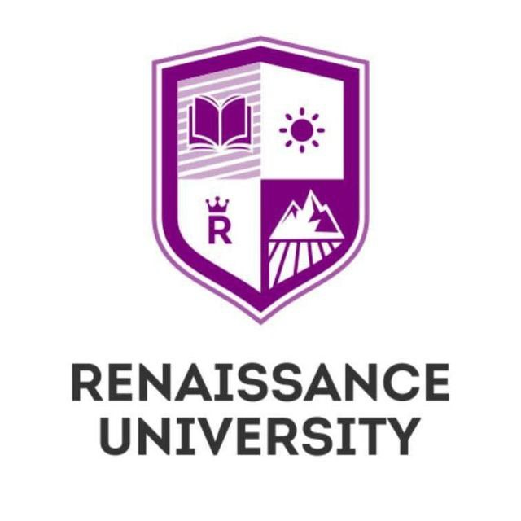

To‘lov-kontrakt (Ikki tomonlama) asosida mutaxassis tayyorlashga
SHARTNOMA № 8/{{ contract_id }}
Toshkent shahri
2023-yil “{{ now_date }}”
RENAISSANCE UNIVERSITY nodavlat oliy ta’lim muassasasi (keyingi
o‘rinlarda “Universitet”) nomidan rektor B.E.Izbasarov bir tomondan,
{{ full_name }} (keyingi o‘rinlarda “Talaba”) ikkinchi
tomondan, birgalikda “Tomonlar” deb ataladigan shaxslar mazkur
kontraktni quyidagicha tuzdilar:
I.KONTRAKT PREDMETI
1.1. Mazkur shartnomaga muvofiq Universitet talabani quyida ko‘rsatilgan
ta’lim yo‘nalishi va ta’lim shakli bo‘yicha oliy ta’limning ta’lim
standartlari asosida tasdiqlangan o‘quv reja va o‘quv dasturlari asosida
o‘qitish majburiyatini oladi.
|
Ta’lim bosqichi:
|
Bakalavr
|
|
Ta’lim shakli:
|
{{ edu_state }}
|
|
O‘qish muddati:
|
{{ edu_duration }}
|
|
O‘quv kursi:
|
1-bosqich, 1-semestrdan
|
|
Ta’lim yo'nalishi:
|
{{ edu_major }}
|
Talaba esa, Universitet tomonidan belgilangan tartib-qoidalarga rioya
qilgan holda ta’lim olish va ta’lim olganlik uchun haq to‘lash
majburiyatini oladi
1.2. Universitetga o‘qishga qabul qilingan talabalar O‘zbekiston
Respublikasining “Ta’lim to‘g‘risida”gi Qonuni va davlat ta’lim
standartlarga muvofiq ishlab chiqilgan o‘quv rejalar va fan dasturlari
asosida ta’lim oladilar
II.TA’LIM XIZMATINI KO‘RSATISH NARXI, TO‘LASH MUDDATI VA TARTIBI
2.1. O‘qish davrida ta’lim xizmatini ko‘rsatish narxi Universitetning
yillik xarajatlari miqdoriga bog‘liq holda hisoblanadi.
2.2. Ushbu kontrakt bo‘yicha talabani bir yillik o‘qitish uchun to‘lov
{{ contract_fee }} soʻmni tashkil etadi va quyidagi
muddatlarda amalga oshiriladi:
Qismlarga bo‘lib to‘langanda quyidagi muddatlarda:
-
belgilangan to‘lov miqdorini talabalikka tavsiya etilganlar uchun 50 %
qismi 10 (o‘n) bank ish kunigacha, qolgan 50 % qismi 2024-yil 31-mart
sanasigacha to‘lash majburiyati yuklatilsin.
2.3. Ushbu kontraktning 2.2-bandida ko‘zda tutilgan to‘lov muddatlarini
o‘zgartirish, talabalikka tavsiya etilgan abituriyentlar uchun
Universitet rektorining qarori asosida amalga oshiriladi va bir semestr
uchun amal qiladi.
III.TOMONLARNING MAJBURIY ATLARI
3.1.Universitet majburiyatlari:
-
O‘qitish uchun belgilangan to‘lov o‘z vaqtida amalga oshirgandan
so‘ng, talabani buyruq asosida talabalikka qabul qilish.
-
Talabaga o‘qishi uchun O‘zbekiston Respublikasining “Ta’lim
to‘g‘risida”gi Qonuni va Universitet Ustavida nazarda tutilgan zarur
shart-sharoitlarga muvofiq sharoitlarni yaratib berish.
-
Talabaning huquq va erkinliklari, qonuniy manfaatlari hamda ta’lim
muassasasi Ustaviga muvofiq professor-o‘qituvchilar tomonidan
o‘zlarining funksional vazifalarini to‘laqonli bajarishini ta’minlash.
-
Talabani tahsil olayotgan ta’lim yo‘nalishi (mutaxassisligi) bo‘yicha
tasdiqlangan o‘quv rejasi va dasturlariga muvofiq davlat ta’lim
standarti talablari darajasida tayyorlash
-
O‘quv yili boshlanishida talabani yangi o‘quv yili uchun belgilangan
to‘lov miqdori to‘g‘risida o‘quv jarayoni boshlanishidan oldin
xabardor qilish.
-
Respublikada belgilangan Mehnatga haq to‘lashning eng kam miqdori yoki
tariflar o‘zgarishi natijasida o‘qitish uchun belgilangan to‘lov
miqdori o‘zgargan taqdirda talabaga ta’limning qolgan muddati uchun
to‘lov miqdori haqida xabar berish.
3.2. Talabaning majburiyatlari:
-
Kontraktning 2.2-bandida belgilangan to‘lov summasini shu bandda
ko‘rsatilgan muddatlarda to‘lab borish.
-
Respublikada belgilangan Mehnatga haq to‘lashning eng kam miqdori yoki
tariflar o‘zgarishi natijasida o‘qitish uchun belgilangan to‘lov
miqdori o‘zgargan taqdirda, o‘qishning qolgan muddati uchun ta’lim
muassasasiga haq to‘lash bo‘yicha bir oy muddat ichida kontraktga
qo‘shimcha bitim rasmiylashtirish va to‘lov farqini to‘lash.
-
Talaba o‘qitish uchun belgilangan to‘lov miqdorini to‘laganlik
to‘g‘risidagi bank tasdiqnomasi va kontraktning bir nusxasini o‘z
vaqtida hujjatlarni rasmiylashtirish uchun ta’lim muassasasiga
topshirish.
-
Tahsil olayotgan ta’lim yo‘nalishining (mutaxassisligining) tegishli
malaka tavsifnomasiga muvofiq kelajakda mustaqil faoliyat yuritishga
zarur bo‘lgan barcha bilimlarni egallash, dars va mashg‘ulotlarga
to‘liq qatnashish.
-
Ta’lim muassasasi va talabalar turar joyining ichki nizomlariga qa’tiy
rioya qilish, professor-o‘qituvchilar va xodimlarga hurmat bilan
qarash, Universitet obro‘siga putur yetkazadigan harakatlar qilmaslik,
moddiy bazasini asrash, ziyon keltirmaslik, ziyon keltirganda o‘rnini
qoplash.
IV. TOMONLARNING HUQUQLARI
4.1. Universitet huquqlari:
-
O‘quv jarayonini mustaqil ravishda amalga oshirish, talabaning oraliq
va yakuniy nazoratlarni topshirish, qayta topshirish tartibi hamda
vaqtlarini belgilash.
-
O‘zbekiston Respublikasi qonunlari, Universitet nizomi hamda mahalliy
normativ-huquqiy hujjatlarga muvofiq talabaga rag‘batlantiruvchi yoki
intizomiy choralarni qo‘llash.
-
Agar talaba o‘quv yili semestrlarida yakuniy nazoratlarni topshirish,
qayta topshirish natijalariga ko‘ra akademik qarzdor bo‘lib qolsa uni
kursdan-kursga qoldirish huquqiga ega.
-
Universitet talabaning qobiliyati, darslarga sababsiz qatnashmaslik,
intizomni buzish, Universitetning ichki tartib qoidalariga amal
qilmaganda, respublikaning normativ-huquqiy hujjatlarida nazarda
tutilgan boshqa sabablarga ko‘ra hamda o‘qitish uchun belgilangan
to‘lov o‘z vaqtida amalga oshirilmaganda talabani talabalar safidan
chetlashtirish huquqiga ega.
4.2.Talabaning huquqlari:
-
O‘quv yili uchun kontrakt summasini semestrlarga bo‘lmasdan bir yo‘la
to‘liqligicha to‘lash mumkin.
-
Talaba mazkur kontrakt bo‘yicha naqd pul, bank plastik kartasi,
bankdagi omonat hisob raqami orqali, ish joyidan arizasiga asosan
oylik maoshini o‘tkazishi yoki banklardan ta’lim krediti olish orqali
to‘lovni amalga oshirishi mumkin.
-
Professor-o‘qituvchilarning o‘z funksional vazifalarini bajarishidan
yoki ta’lim muassasasidagi shart- sharoitlardan norozi bo‘lgan
taqdirda ta’lim muassasasi rahbariyatiga yozma shaklda murojaat
qilish.
VI.YAKUNIY QOIDALAR VA NIZOLARNI HAL QILISH TARTIBI
6.1. Ushbu kontraktni bajarish jarayonida kelib chiqishi mumkin bo‘lgan
nizo va ziddiyatlar tomonlar o‘rtasida muzokaralar olib borish yo‘li
bilan hal etiladi.
6.2. Muzokaralar olib borish yo‘li bilan nizoni hal etish imkoniyati
bo‘lmagan taqdirda, tomonlar nizolarni hal etish uchun amaldagi
qonunchilikka muvofiq iqtisodiy sudga murojaat etishlari mumkin.
6.3. Universitet axborotlar va xabarnomalarni internetdagi veb-saytida,
axborot tizimida yoki e’lonlar taxtasida e’lon joylashtirish orqali
xabar berishi mumkin.
6.4. Ushbu kontraktga qo‘shimcha bitim kiritilgan taqdirda ushbu barcha
kiritilgan qo‘shimcha bitimlar kontraktning ajralmas qismi hisoblanadi.
6.5. Talaba tomonidan taqdim qilingan barcha hujjatlar, hujjatlardagi
ma’lumotlarning ishonchliligi, to‘g‘riligi, haqqoniyligi bo‘yicha
javobgarlik Talaba zimmasiga yuklanadi. Talaba tomonidan hujjatlami
qalbakilashtirish huquqbuzarligi ta’lim muassasasi tomonidan
aniqlanganda darhol huquqni muhofaza qiluvchi organlarga xabar beriladi,
talaba talabalar safidan chetlashtiriladi hamda talaba to‘lagan
to‘lov-kontrakt summasi qaytarilmaydi va Universitet hisob-raqamida
qoladi. Bunday holatlar uchun jinoyiy javobgarlik mavjudligini ma’lum
qilamiz. Agar bunday holat Talaba ta’lim muassasasidan bakalavr yoki
magistr diplomini u taqdim qilgan qalbaki hujjat(-lar) yoki
hujjatlardagi qalbakilashtirilgan ma’lumotlar asosida olgan bo‘lsa, unda
diplom haqiqiy emas deb topiladi va ushbu holat yuzasidan huquqni
muhofaza qiluvchi organlarga xabar beriladi
VII. TOMONLARNING REKVIZITLARI VA IMZOLARI
Ta’lim muassasasi:
RENAISSANCE UNIVERSITY
Manzili: Toshkent shahri Uchtepa tumani Guzar MFY Lutfiy ko‘chasi
18-uy
Tel.: +998 94 572-47-77
Bank rekvizitlari:
H/r: 2020 8000 2055 7730 6002 “KAPITALBANK”
Chorsu filiali MFO: 01033 INN: 309 918 029
Talaba:
F.I.Sh.: ___________________________________
Yashash manzili:____________________________
Pasport ma’lumotlari:_______________________
JSHSHIR: ___________________________________
Telefon raqami:_____________________________
Talaba __________ __________________________
(imzo) (F.I.SH)